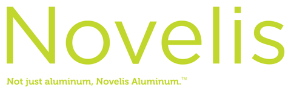
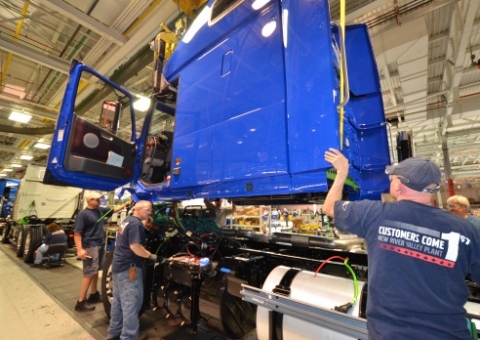
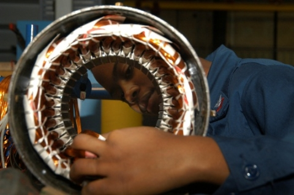

In This Issue
Partners in the Spotlight
- Novelis Joins Better Plants
- Legrand Partners with DOE to Advance Supply Chain Energy Efficiency
- General Dynamics and Nissan Case Studies Highlight Benefits of Superior Energy Performance
- Volvo Recognized for Leadership in Energy Efficiency
- Schneider Electric Showcases Solar Field and SEP Implementation at Smyrna, TN, Site
AMO and Industry News
- DOE's New Checklist Helps Plants Assess Energy Management Activities
- Improve Motor System Efficiency and Performance with Three New Industry Guides
- Industrial Assessment Center Student and Alumni Awards Announced
- U.S. EPA Publishes Energy Treasure Hunts Guide
- Report Released on Designing Effective State Industrial Energy Efficiency Programs
- Additional Verification Bodies Now Available for SEP
- America Makes Spurs Innovation in Additive Manufacturing
Welcome from the Director
 Greetings and welcome to the inaugural issue of the Advanced Manufacturing Office Update! Inside you will find the most recent news on AMO programs and resources, including research and development projects, our collaborative facilities, and technical assistance offerings. The Update will highlight the progress being made in deploying energy-efficient manufacturing technologies and practices across U.S. industry, deliver notable news and new publications right to your mailbox, and put Better Plants and Superior Energy Performance™ partner success stories front and center for you to share with your colleagues, company management, and industry peers. Feel free to forward the newsletter to friends and invite them to sign up for this and other AMO News and Events.
Greetings and welcome to the inaugural issue of the Advanced Manufacturing Office Update! Inside you will find the most recent news on AMO programs and resources, including research and development projects, our collaborative facilities, and technical assistance offerings. The Update will highlight the progress being made in deploying energy-efficient manufacturing technologies and practices across U.S. industry, deliver notable news and new publications right to your mailbox, and put Better Plants and Superior Energy Performance™ partner success stories front and center for you to share with your colleagues, company management, and industry peers. Feel free to forward the newsletter to friends and invite them to sign up for this and other AMO News and Events.
Mark Johnson, Director – Advanced Manufacturing Office
Partners in the Spotlight
Novelis Joins Better Plants
Better Plants is excited to announce a new Program Partner, Novelis. By joining the program, the company pledges to reduce the energy intensity of U.S. manufacturing operations by 25% over ten years.
Novelis – the global leader of aluminum rolled products and the world's largest aluminum recycler – is actively integrating sustainability into company strategy and operations. The company's ambitious goals include halving absolute greenhouse gas emissions and using 80% recycled input by 2020. Novelis operates 25 manufacturing facilities in nine countries on four continents and has approximately 11,000 employees.
The Better Plants Program is a national initiative that works with industry to set and meet ambitious energy-saving targets. The program helps partners meet their goals by providing technical assistance and access to DOE tools and resources. It counts over 120 companies as partners, encompassing approximately 1,800 plants and representing 8% of the U.S. manufacturing energy footprint. For more information, please contact Andre de Fontaine.
Legrand Partners with DOE to Advance Supply Chain Energy Efficiency
DOE is excited to work with more Better Plants Program and Challenge partners to expand the supply chain pilot. For more information, please contact Andre de Fontaine.To expand its commitment to energy efficiency, Legrand North America recently partnered with DOE to recruit eight of its suppliers to join the Better Plants Supply Chain Pilot. The eight suppliers are: Chapco, Complete Design and Packaging, Durex Incorporated, Giering Metal Finishing, Lynam Industries, Magnetic Metals, Rowley Spring and Stamping Corporation, and Stanley Spring and Stamping Corporation. The new pilot will improve supply chain energy management by providing Better Plants Partners with an established, national program they can direct their suppliers to that features clear goals, targeted technical assistance, and proven methods for tracking progress. Upon joining the program, suppliers make a corporate-wide commitment to energy efficiency. They receive national recognition for their leadership and DOE technical assistance to help them achieve their energy goals. In the process, DOE helps partners measure energy performance improvement among their participating suppliers. Legrand North America played a key leadership role in conducting outreach to key suppliers and bringing them into the program.
General Dynamics and Nissan Case Studies Highlight Benefits of Superior Energy Performance
Two recent case studies document the benefits of participation in the Superior Energy Performance (SEP) program, including real-world details about energy management system implementation, results, and lessons learned.
Developed energy performance projects and goals for seven of its most energy-intensive units using ISO 50001 energy management system.The General Dynamics Ordnance and Tactical Systems case study discusses the company's Scranton, Pennsylvania, federal ammunition manufacturing facility, which:
- Used DOE's energy performance indicator (EnPI) tool to establish a normalized baseline of energy consumption and track annual progress of intensity improvements and energy savings.
- Improved facility energy performance by 11.9% and became the first U.S. defense contractor to be SEP-certified.
- Achieved a payback within six months on its entire investment (including the cost of internal plant staff time).
Achieved energy savings under a dynamic energy team drawn from every level of management.The Nissan case study discusses the company's Smyrna, Tennessee, vehicle assembly plant, which:
- Modeled its energy management system after its existing ISO 14001 environmental management system with support from the Facilities Engineering department.
- Improved energy performance by 7.2% and saved $938,000 each year.
- Recouped its investment in SEP in only four months and became the first U.S. passenger vehicle plant to achieve SEP certification.
The companies join Cummins, HARBEC, and Mack Trucks in recently achieving facility-level SEP certification and impressive energy performance results. Both General Dynamics and Nissan are now expanding SEP to additional plants through the SEP Enterprise-wide Accelerator, which helps companies meet energy savings goals by deploying SEP tools and training on an enterprise level across multiple sites.
The case studies are a part of a growing suite of products that highlight the business value of energy management released by the Global Superior Energy Performance (GSEP) Energy Management Working Group (EMWG). Through GSEP's EMWG, government officials from 11 countries are sharing best practices and leveraging their collective knowledge to create high-impact national programs that accelerate the use of energy management systems in industry and commercial buildings. For more information, please contact Paul Scheihing.
Volvo Recognized for Leadership in Energy Efficiency
Volvo Group North America is demonstrating its leadership in energy efficiency by excelling in two key DOE industrial energy efficiency programs: Better Plants and SEP. Through Better Plants, the company has already achieved a 16% improvement in energy intensity across its eight U.S. plants, marking significant progress towards its overall goal of a 25% energy intensity improvement over ten years. At the same time, the company's New River Valley plant in Dublin, Virginia, has posted a 26% improvement in energy efficiency in just three years through SEP and its Macungie, Pennsylvania, plant has posted a 41% improvement in ten years through the program. In April 2014, Kathleen Hogan, Deputy Assistant Secretary for Energy Efficiency, visited Volvo's New River Valley assembly plant to tour the facility and laud the company's progress. The facility is the company's largest truck manufacturing plant in the world, covering more than 1.6 million square feet. To learn more about Volvo's efforts, view the press release and Dr. Hogan's personal account of her visit. If you have questions or comments, please contact Paul Scheihing.
Schneider Electric Showcases Solar Field and SEP Implementation at Smyrna, TN, Site
Schneider Electric is showcasing its state-of-the-art Smyrna, Tennessee, plant through the Better Plants Challenge. The facility is SEP-certified and features a dual voltage solar field. The six acre, 1MW solar field is the first of its kind in the United States to operate at both 1000VDC and 600VDC. This enables a more efficient solar operation while also providing researchers with a real-world testing ground for new solar technology. In total, the solar field and energy efficiency improvements are netting over $400,000 in energy cost savings, equivalent to about a 62% reduction. The facility's clean energy efforts serve to advance both Schneider Electric's corporate commitment under Better Plants and its work with the Superior Energy Performance program to continually improve energy efficiency. For more information, please contact Andre de Fontaine.
AMO and Industry News
DOE's New Checklist Helps Plants Assess Energy Management Activities
DOE developed the Strategic Energy Management Checklist to help manufacturing facilities conduct a high-level assessment of their energy management practices and identify opportunities to achieve greater energy savings. This simple checklist can help a facility assess whether Superior Energy Performance (SEP) or ISO 50001 are practical next steps, or if foundational energy management activities (including ENERGY STAR) are more appropriate to achieve persistent facility energy savings.
With the easy-to-use checklist, facility managers can select the energy management activities they have already completed and identify missing elements needed to achieve SEP certification or ISO 50001. This information can help users access DOE technical resources to implement missing elements. Visit the SEP website to learn how manufacturing facilities in a wide range of industries are using SEP certification to achieve 6% to 25% improvement in energy performance over three years. For more information, please contact Paul Scheihing.
Improve Motor System Efficiency and Performance with Three New Industry Guides
Motor systems account for approximately 60 to 70% of the total electricity used in an industrial facility on average. Significant opportunities to save energy and money are possible from optimizing motor systems. AMO recently published the following three guides to help manufacturers improve the energy efficiency of motor driven systems:
- Continuous Energy Improvement in Motor Driven Systems – A Guidebook for Industry: Provides a step-by-step approach to developing a motor system energy-improvement action plan. It complements DOE's MotorMaster+ motor selection and motor management software tool.
- Premium Efficiency Motor Selection and Application Guide – A Handbook for Industry: Informs new motor purchase decisions by identifying energy and cost savings that can come from replacing motors with premium efficiency units.
- Improving Motor and Drive System Performance – A Sourcebook for Industry: Outlines opportunities to improve motor and drive systems performance, including practical guidelines, energy efficiency assessment instructions, and referrals to other information and assistance such as software, videos, and training opportunities.
For more information, please contact Paul Scheihing.
Industrial Assessment Center Student and Alumni Awards Announced
DOE is pleased to announce the winners of the first ever Industrial Assessment Center (IAC) Outstanding Student and Distinguished Alumni awards. The IAC program boosts America's small- and medium-sized manufacturers. Since 1976, the program has supported university engineering faculty and students who provide free assessments and assistance in reducing energy, waste, and water as well as increase productivity. IACs are also meant to train the next generation of energy savvy engineers and leaders. The Outstanding Student and Distinguished Alumni awardees have made significant impacts in assisting small and medium-sized manufacturers and impressive achievements in promoting the practices and principles of energy engineering. This year's winners are:
Outstanding IAC Engineering Student Awardees
- Dayakar Devaru (graduate student, University of West Virginia)
- Daniel Borgnakke (undergraduate student, University of Michigan)
Distinguished IAC Alumni Awardees
- Kyle Rademacher (early career category, University of Michigan, 2008)
- John Seryak (University of Dayton, 2001 & 2004)
- Dr. Darin Nutter (Oklahoma State University, 1986 & 88, Texas A&M University, 1994)
- Sandra Chow (San Francisco State University, 2000)
- Adam Selvin (San Francisco State University, 2002)
View the awards announcement to learn more about the accomplishments and on-going efforts of these exceptional IAC students and alumni. If you have questions or comments, please contact John Smegal.
U.S. EPA Publishes Energy Treasure Hunts Guide
Manufacturers are sending their staff on "energy treasure hunts" and identifying opportunities for energy savings. A guide book to help companies utilize employee ingenuity to save energy was released April 2014 by the U.S. Environmental Protection Agency's (EPA) ENERGY STAR program. Energy Treasure Hunts: Simple Steps to Finding Energy Savings draws upon the best practices of ENERGY STAR partner organizations.
Energy treasure hunts are typically two- to three-day events that engage employees to find low-cost energy saving opportunities in behavioral, operational, and maintenance oriented actions. The treasure hunt process was tested with a variety of companies, including small companies and facilities without formal energy programs. All companies reported finding numerous no- and low-cost savings opportunities with payback periods under six months and quick implementation rates. Many of these companies quickly achieved 4 to 10% reductions in intensity and substantial savings in energy costs. The process of organizing and executing an Energy Treasure Hunt in combination with the ENERGY STAR Guidelines for Energy Management created better site energy teams, introduced better management practices, and secured upper management support for the energy program to keep searching for ways to improve performance.
Report Released on Designing Effective State Industrial Energy Efficiency Programs
A new SEE Action guide, Industrial Energy Efficiency: Designing Effective State Programs for the Industrial Sector, assesses the key features of programs that have led to increased energy savings for industrial customers. The report, which focuses on designing industrial energy efficiency programs at the state level, was released in March 2014 for the benefit of state regulators, utilities, and other program administrators. It also identifies new, emerging directions in programs that might benefit from additional research and discussion to promote adoption.
The report is a companion resource to the March 2013 Guide to the Successful Implementation of State Combined Heat and Power Policies, which provides state utility regulators and other state policymakers with actionable information to assist them in implementing key state policies that impact CHP. Both papers were released by the Industrial Energy Efficiency and Combined Heat and Power (IEE/CHP) Working Group, one of eight working groups composing the State and Local Energy Efficiency Action Network (SEE Action), a state- and local-led effort facilitated by DOE and the U.S. EPA with a goal of taking energy efficiency to scale. For more information, please contact Sandy Glatt.
Additional Verification Bodies Now Available for SEP
Superior Energy Performance (SEP) recognizes industrial facilities that demonstrate energy management excellence and sustained energy savings. Third-party verification using an ANSI-ANAB Accredited Verification Body offers robust, independent confirmation of a facility's conformance to ISO 50001 and improved energy performance—providing accurate energy numbers that energy managers can present with confidence to management and other stakeholders.
Industrial facilities can now choose from four SEP Verification Bodies (or applicant Verification Bodies) to conduct their SEP audit:
- DEKRA Certification, Inc.
- UL DQS Inc. (accredited in April 2014)
- Advanced Waste Management Systems, Inc. (applicant)
- Lloyd's Register Quality Assurance (LRQA) (applicant as of April 2014)
Verification Bodies determine whether a facility meets the SEP certification requirements based on a two-stage audit process. For more information, please contact Paul Scheihing.
America Makes Spurs Innovation in Additive Manufacturing
Over 100 partners of America Makes gathered in Youngstown, Ohio, in March 2014 for a three-day program review of milestones and plans for the coming year. The organization—co-funded by AMO's Facilities subprogram—is a public-private partnership of companies, non-profit organizations, academic institutions, and government agencies dedicated to growing U.S. additive manufacturing capabilities. During the review, principal investigators gave progress updates on the institute's first seven R&D projects.
"America Makes is making great progress. I'm really excited to see the final results from the first round of projects as they wrap up," said AMO Director Mark Johnson, who attended the review with AMO Deputy Director Rob Ivester. "From improvements to in-situ monitoring of additive processes that will help minimize defects as parts are built, to qualified methods for repurposing and rejuvenating tooling through additive techniques – these advancements will help increase adoption of additive manufacturing across diverse industries."
The second round of 15 projects was announced in January of this year and many of these projects were kicked off before the program review. The institute's areas of focus include technology development and transition, education and workforce development, and the advanced manufacturing enterprise. Project participation is open to members and occasionally to non-members, with teams led by an America Makes member. Companies, academic institutions, and individuals are invited to sign up to express interest in future project teams. Visit the America Makes website to learn more about the benefits of membership and view the list of current members. If you have questions or comments, please contact Blake Marshall.